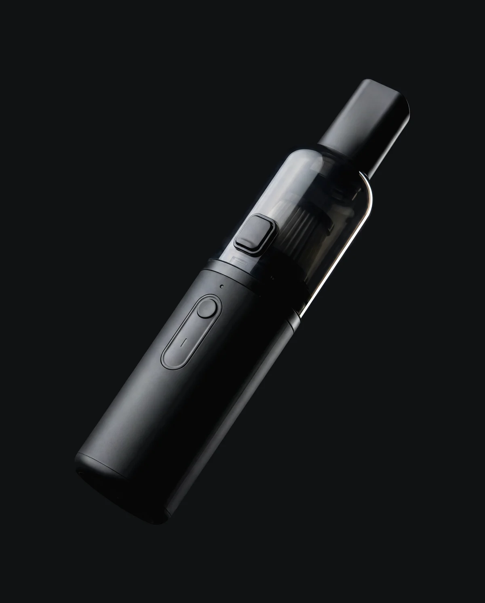
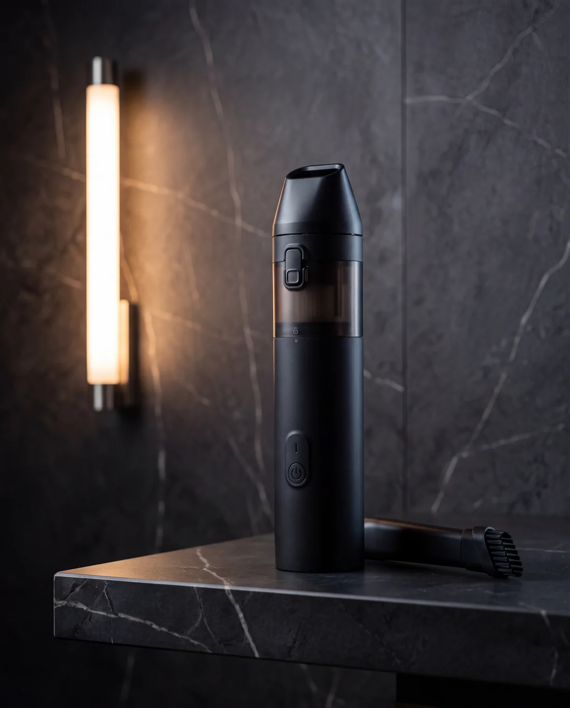
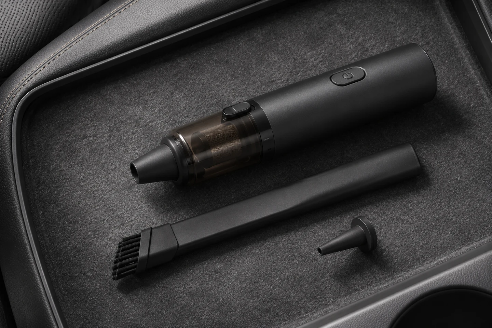
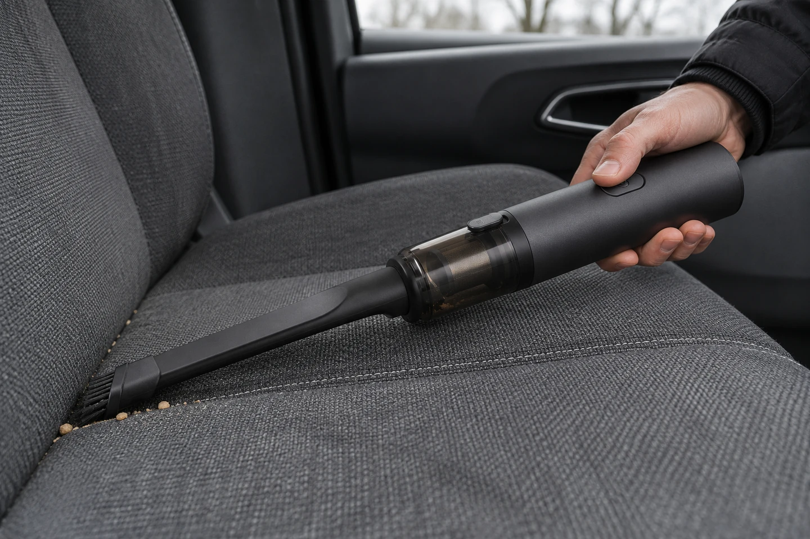
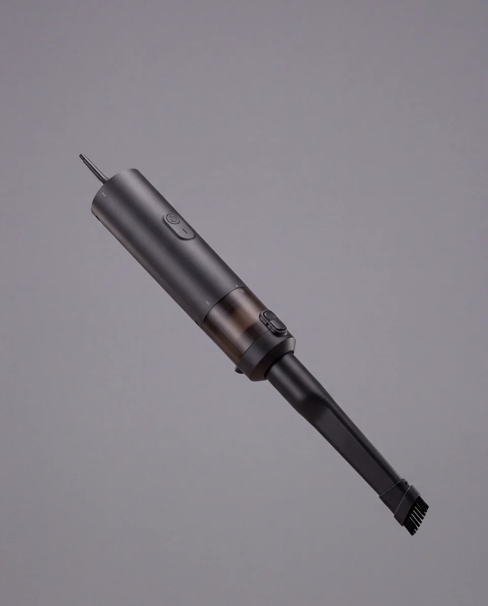
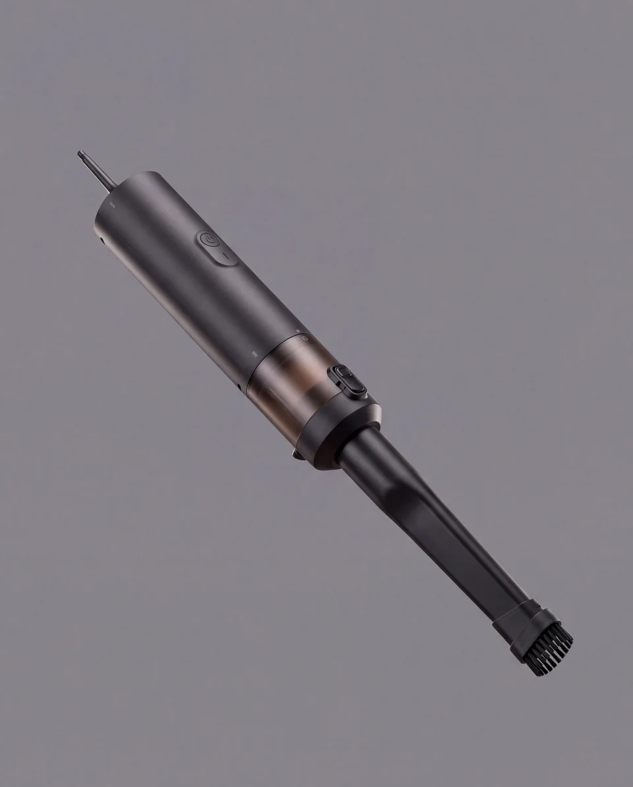

Автомобильный пылесос
Для швов и щелей
Соберите крошки с сиденья или выдуйте пыль из глубокого кармана.
120 Вт Мощность
- Аккумулятор
- 2 000 мА·ч
- Узкие места
- Выдув


Насадки для узких мест
Щелевая насадка достаёт до шва. Короткая насадка направляет выдуваемый воздух.

После уборки
После уборки снимите насадку и опорожните контейнер.


Для дома или для машины?
Беспроводной — для пола и мебели
Длинная трубка для пола, съёмный блок для сидений и полок.
Автомобильный — для салона
Узкая насадка для швов, направленный выдув для углублений.
Характеристики
Все параметры 5
- Модель
- A2
- Мощность
- 120 Вт
- Аккумулятор
- 2000 мА·ч
- Режимы
- Всасывание и выдув
- Оснастка
- Сменные насадки
Как понять, когда включать выдув?
Вдоль открытого шва обычно достаточно всасывания. Выдув пригодится для глубокой канавки, если можно направить пыль из неё на доступную поверхность.
Куда попадает собранный мусор?
В контейнер между насадкой и корпусом. После уборки его можно открыть и вытряхнуть содержимое, пока мелкий сор ещё не слежался.
Сколько продлится уборка от одного заряда?
Ёмкость аккумулятора составляет 2000 мА·ч. Если для вас важно пройти весь салон за один раз, при выборе уточните продолжительность работы в том режиме, которым собираетесь пользоваться.
Какую модель взять ещё и для полов в квартире?
У беспроводного пылесоса есть напольная щётка и длинная трубка. Сильная сторона автомобильного — короткие уборки в салоне, где часто приходится менять угол насадки и работать в тесноте.

Уборка
Автомобильный пылесос
[16 990 ₸]
- [В наличии]
- Доставка [1–7 дней]
- Гарантия [12 месяцев]
Задать вопрос продавцу
Скопируйте текст и отправьте его продавцу. Название товара уже указано.